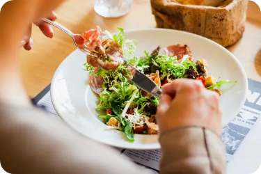

|
Benarkah Pola Diet Vegan Bantu Kurangi Dampak Perubahan Iklim?
Dinny Mutiah | 14 November 2021

Apa sih pola diet vegan? Sederhananya, orang yang menganut pola hidup tersebut tidak mengonsumsi daging, produk susu hewani,
atau telur. Keberadaannya makin jadi perbincangan, terutama setelah sejumlah penyelenggaraan acara penghargaan berskala dunia,
seperti Emmy Awards dan Oscar, memasukkan menu vegan dalam sesi makan malam.
Banyak pro kontra mengiringi veganisme. Sebagian yang menolak, menganggap pola hidup vegan membuat orang kekurangan sebagian
nutrisi yang dibutuhkan tubuh.
Tetapi, para pendukungnya meyakini vegan menjadi cara menjaga kesehatan sekaligus berkontribusi bagi keberlangsungan hidup makhluk
hidup dan alam sekitar.
Dilansir dari laporan ilmiah Stanford University pada 2018, studi menunjukkan adanya dampak veganisme pada kehidupan bumi. Dunia vegan
mengurangi 49 persen emisi gas rumah kaca dari industri makanan. Selain itu, diet vegan ini akan mengurangi 50 persen pengasaman tanah
dan menggunakan air 19 persen lebih sedikit.
Irene Umar, Founder Loka Padang, sebuah restoran padang khusus vegan, mengungkapkan bahwa setiap porsi makanan yang dipilih manusia,
akan menyumbang penghematan tertentu untuk lingkungan ketika mereka menyadarinya.
"Ketika seseorang menginginkan daging sapi misalnya, maka permintaan untuk daging sapi akan naik dan sapi-sapi itu membutuhkan lahan
bersih untuk hidup. Akibatnya, tanaman berkurang dan tidak ada yang menyerap CO2, (semua) hanya karena manusia yang ingin makan daging
sapi. Jadi semuanya tergantung dengan pilihan makanan manusia," kata dia dalam diskusi virtual yang diselenggarakan Project Planet ID,
Sabtu, 12 September 2020.
Shanti Allen, Co-Founder & Recipe Creator Alchemy Bali juga mengatakan hal serupa bahwa bumi adalah refleksi dari apa yang dikonsumsi
manusia di dalamnya. Ia menyatakan bahwa tanpa sadar atau secara sadar, masyarakat tahu ada yang salah dengan sistem makanan yang terjadi,
tetapi tidak tahu betapa mudahnya menjalankan hidup sehat jika dibiasakan.
"You are what you eat. Planet kita adalah apa yang kita makan, apakah kita ingin planet dengan beragam hutan hujan dengan segala jenis
kehidupan hewan dan tanaman di dalamnya, atau kita menginginkan adanya tanaman genetik, hewan yang diberi antibiotik dan hormon non-alami?" katanya.
Selain itu, dia percaya bahwa makanan adalah sesuatu yang memberikan energi dan tidak seharusnya membuat tubuh lelah setelah memakannya.
"Kita harusnya mendapat kekuatan dan kesembuhan dari apa yang kita makan. Saya percaya bahwa makanan bukan hanya tentang lemak, karbohidrat,
dan protein, itu adalah sesuatu yang hidup," imbuhnya.
Meski demikian, Irene menyadari tidak mudah untuk mengubah pola hidup seseorang, dari pemakan daging hingga berhenti memakan daging.
Tetapi, sambung dia, dengan setidaknya menambahkan makanan non-daging dalam konsumsi sehari-hari secara konsisten akan berkontribusi bagi bumi.
"Anda tidak perlu secara langsung berubah menjadi seorang vegan, you don't have to, tapi kalau mau melakukannnya akan sangat baik. Lakukan dengan
perlahan tapi konsisten," ujarnya.
Shanti juga mengingatkan agar mereka yang memulai pola hidup vegan, tidak menganggapnya sebagai sebuah pengorbanan atau penderitaan.
"Tambahkan saja hal-hal baik dalam daftar menu Anda setiap hari. Tambahkan salad, smoothie, tidak perlu sekaligus menyingkirkan daging dari menu," katanya.
Ia mengatakan akan lebih baik dimulai dengan mengganti beberapa stok makanan di rumah dengan bahan makanan yang lebih sehat dan sesuai dengan tujuan
pola hidup sehat. "Jangan terlalu keras pada diri Anda. Ini bukan tentang menjadi yang paling sempurna, tetapi teruslah berkomitmen. Mulailah di mana
Anda berada, gunakan apa yang Anda miliki, dan lakukan sebaik mungkin yang Anda bisa," imbuhnya lagi.
|
|